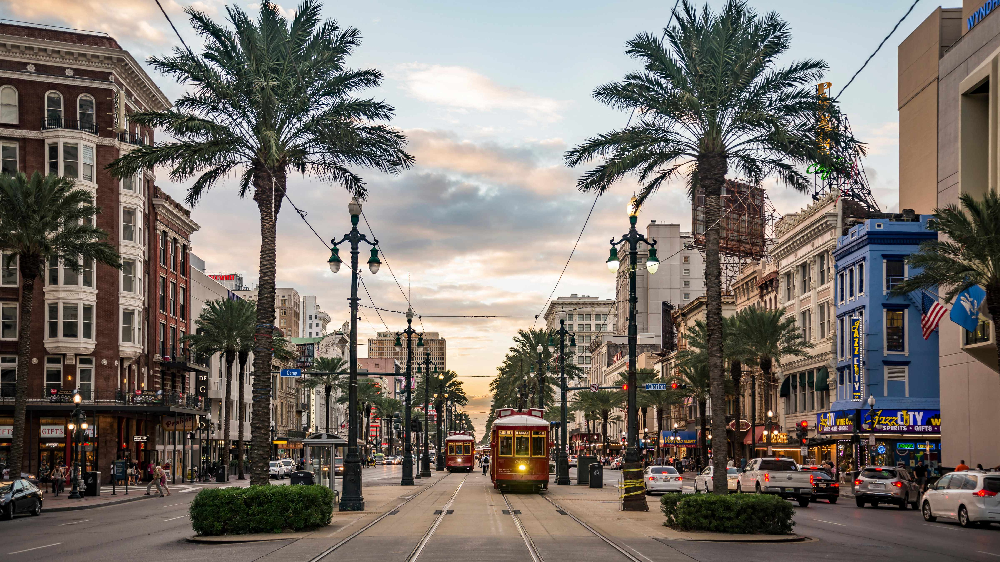
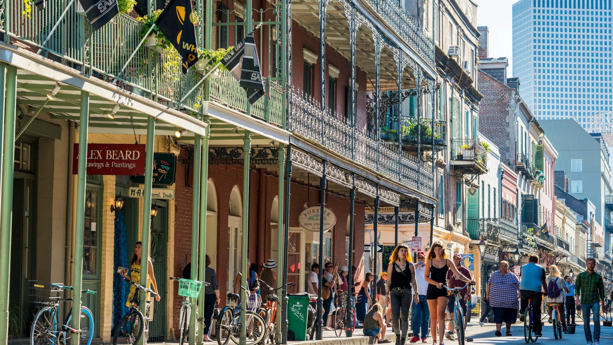
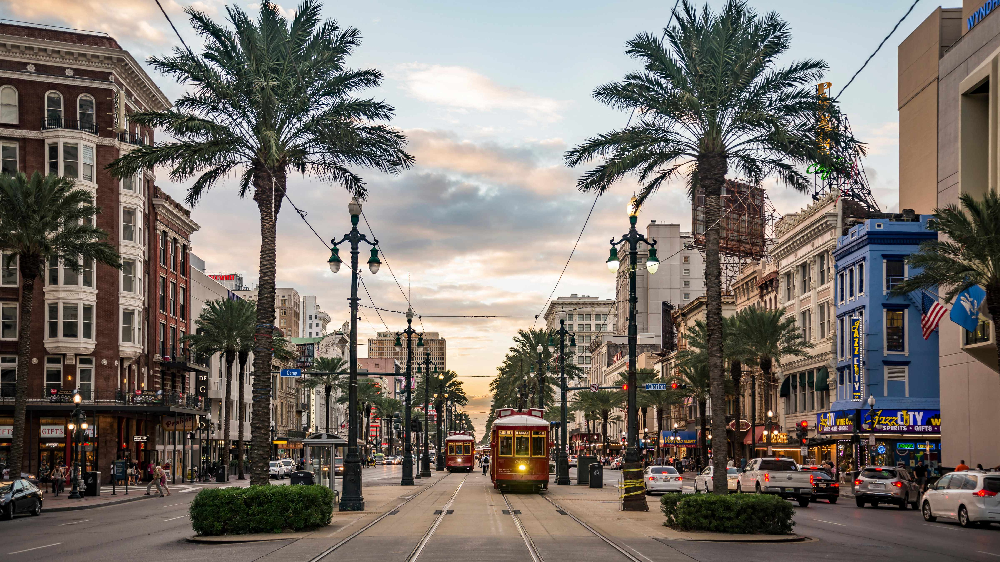
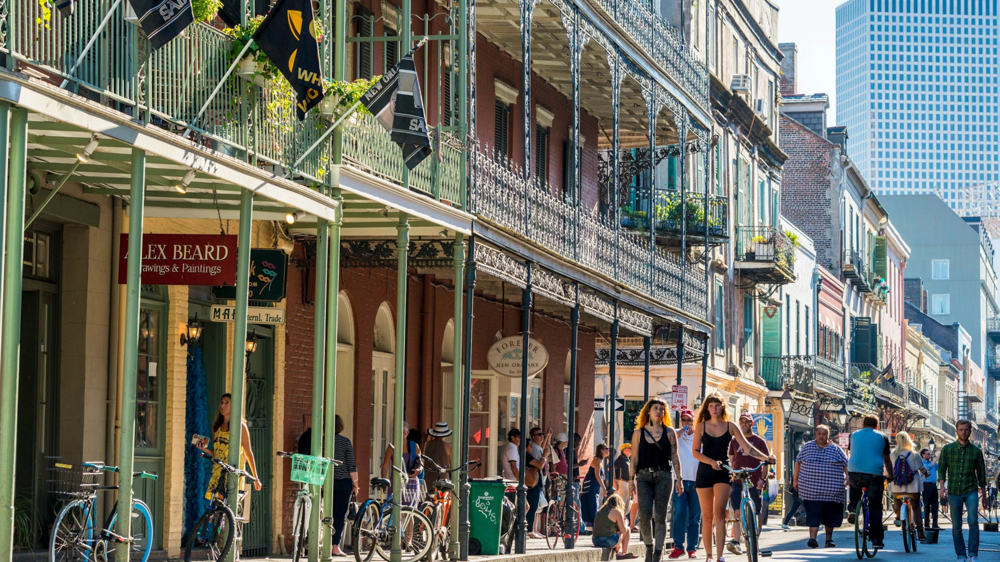

The French Quarter
The French Quarter is quite possibly the backbone of New Orleans. It is the oldest part of the city, as well
as the one that brings the most tourists. It was built by the first French settlers when they arrived in
America. It has been now designated as a National Historic Landmark, and is home to dozens of restaurants,
music clubs, bars, museums and other activities related to tourism.
It's a lovely and beautiful place, perfect for a little walk during the day, when you can enjoy its French
and Spanish architecture and its joyful colors. But this place isn't only active during the day ! Nightlife
is really important in New Orleans, especially in that quarter. Music clubs and bars are often open at night,
and streets are always lit up. It is a vibrant town, where you'll always find something that picks your
interest.
 


